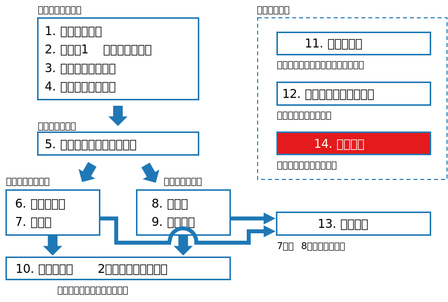
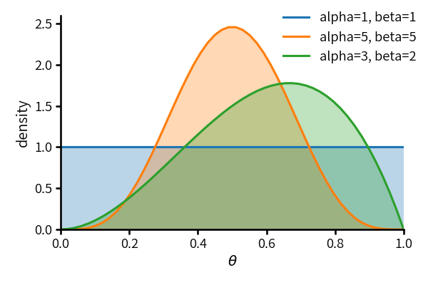
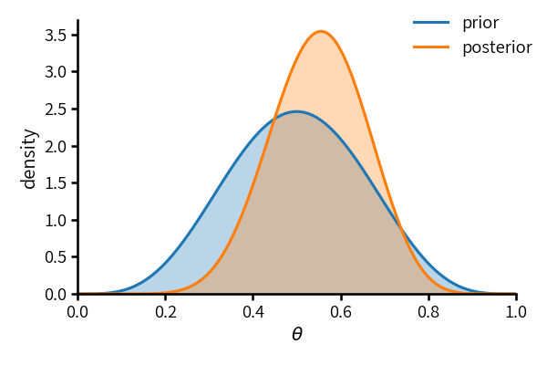
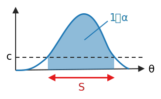

class: middle, center # 数理統計学特論II<br>おまけ ベイズ法 奥 牧人 (和漢研) --- # 前回の復習 前回の目的 * 最尤推定と尤度比検定の漸近特性に関する証明の概要を理解すること 前回の達成目標 * 最尤推定量の漸近有効性の証明に使う用語を複数あげられる。 * カルバック・ライブラー情報量の意味を説明できる。 * 対数尤度比が漸近的に $\chi^2$ 分布に従う理由を説明できる。 --- # 今回の位置付け  --- # 今回の目的と達成目標 目的 * ベイズ統計学の基本用語の意味を理解すること 達成目標 * ベイズの定理の式を書くことができる。 * 事前分布と事後分布の意味を説明できる。 * MAP推定の意味を説明できる。 * 共役事前分布の意味を説明できる。 --- # 予習用キーワードの確認 * ベイズの定理 * ベータ分布 --- # Outline 1. ベイズ統計学と古典的統計学 2. 事前分布と事後分布 3. 事前分布の選択 4. 統計的決定理論から見たベイズ法 5. ミニマックス決定関数と最も不利な分布 --- # Outline 1. **ベイズ統計学と古典的統計学** 2. 事前分布と事後分布 3. 事前分布の選択 4. 統計的決定理論から見たベイズ法 5. ミニマックス決定関数と最も不利な分布 --- # ベイズ統計学と古典的統計学 * 古典的統計学 * 1920年代に基礎が成立 * パラメータを固定値と考える * ベイズ統計学 * 1950年代以降に発展 (トーマス・ベイズは18世紀の人物) * パラメータを確率変数と考える --- # ベイズの定理 * 確率質量関数または確率密度関数を $p(x)$ などと書く。 * 同時確率/同時確率密度の分解 $$p(x,y)=p(x|y)p(y)=p(y|x)p(x)$$ * ベイズの定理 ($p(y)\neq 0$ とする) $$p(x|y)=\frac{p(y|x)p(x)}{p(y)}$$ --- # Outline 1. ベイズ統計学と古典的統計学 2. **事前分布と事後分布** 3. 事前分布の選択 4. 統計的決定理論から見たベイズ法 5. ミニマックス決定関数と最も不利な分布 --- # 事前分布と事後分布 * ベイズの定理の式にパラメータ $\theta$ と観測データ $x=(x_1,\ldots,x_n)$ を代入 $$p(\theta|x)=\frac{p(x|\theta)p(\theta)}{p(x)}\propto p(x|\theta)p(\theta)$$ * $p(\theta)$ を **事前分布** (prior distribution) という。 * $p(\theta|x)$ を **事後分布** (posterior distribution) という。 * $p(x|\theta)$ は尤度関数 --- # 例、事前分布 * コインの表が出る確率 $\theta$ を推定したいとする。 * 事前分布としてベータ分布を仮定 $$p(\theta)=\mathrm{Be}(\alpha,\beta)=\frac{1}{B(\alpha,\beta)}\theta^{\alpha-1}(1-\theta)^{\beta-1}$$ * 事前分布のパラメータのことを **ハイパーパラメータ** という。  --- # 例、尤度関数 * $n$ 回投げたときに表の出る回数を $X$ とおくと $X\sim \mathrm{Bin}(n,\theta)$ * 尤度関数 $$p(x|\theta)=\left(\begin{array}{c}n\\\\x\end{array}\right)\theta^x(1-\theta)^{n-x}$$ --- # 例、分母の計算 * 分母の $p(x)$ を計算 $$\begin{align}p(x)&=\int_0^1 p(x,\theta)d\theta\\\\&=\int_0^1p(x|\theta)p(\theta)d\theta\\\\&=\int_0^1\left(\begin{array}{c}n\\\\x\end{array}\right)\theta^x(1-\theta)^{n-x}\frac{1}{B(\alpha,\beta)}\theta^{\alpha-1}(1-\theta)^{\beta-1}d\theta\\\\&=\left(\begin{array}{c}n\\\\x\end{array}\right)\frac{B(\alpha+x,\beta+n-x)}{B(\alpha,\beta)}\end{align}$$ * ベータ関数 $$B(a,b)=\int_0^1 y^{a-1}(1-y)^{b-1}dy$$ --- # 例、事後分布 * 事後分布 $$p(\theta|x)=\frac{p(x|\theta)p(\theta)}{p(x)}=\mathrm{Be}(\alpha+x,\beta+n-x)$$ * 例えば、事前分布が $\mathrm{Be}(5,5)$ で $n=10$, $x=6$ だったら  --- # 例、平均値の変化 * 事前分布の平均値 $$E[\theta]=\frac{\alpha}{\alpha+\beta}$$ * 事後分布の平均値 (ベイズ推定量) $$\begin{align}E[\theta|x]&=\frac{\alpha+x}{\alpha+\beta+n}\\\\&=\frac{\alpha+\beta}{\alpha+\beta+n}\cdot\frac{\alpha}{\alpha+\beta}+\frac{n}{\alpha+\beta+n}\cdot\frac{x}{n}\end{align}$$ * $E[\theta]$ と $x/n$ との内分点 --- # 点推定 * 以降では事後分布が連続分布の場合について説明する。 * ベイズ推定量 (事後分布の平均値) $$\hat\theta=E[\theta|x]=\int\theta\,p(\theta|x)d\theta$$ * **MAP** (maximum a posteriori) 推定量 (事後分布の最頻値) $$\hat\theta=\underset{\theta}{\arg\max}\ p(\theta|x)$$ * MAP 推定量は分子の $p(x|\theta)p(\theta)$ のみを使って計算できる。 --- # 区間推定 * 区間推定も事後分布から得られる。**信用区間** と呼ぶ。 * 高事後密度区間 $$S=\\{\theta\mid p(\theta|x)\geq c\\},\quad \int_S p(\theta|x)d\theta=1-\alpha$$ * ベイズ統計学では母数を確率変数とみなすので、区間の実現値に対しても「$1-\alpha$ の確率で母数 $\theta$ を含む」と言って良い。  --- # 検定、単純仮説の場合 * 帰無仮説と対立仮説がともに単純仮説の場合 $$H_0:\theta=\theta_0\quad\mathrm{vs.}\quad H_1:\theta=\theta_1$$ * 母数空間は $\\{\theta_0,\theta_1\\}$ なので、事前分布は以下の形 $$p(\theta_0)=\pi_0,\quad p(\theta_1)=\pi_1=1-\pi_0$$ * 検定は単純に、事後確率が大きい方を採用 $$p(\theta_1|x)>p(\theta_0|x)\quad\Rightarrow\quad\mathrm{reject}$$ * この場合、書き直すと尤度比検定になっている $$\frac{p(x|\theta_1)}{p(x|\theta_0)}>\frac{\pi_0}{\pi_1}\quad\Rightarrow\quad\mathrm{reject}$$ --- # 検定、複合仮説の場合 * 帰無仮説と対立仮説がともに複合仮説の場合 $$H_0:\theta\in\Theta_0\quad\mathrm{vs.}\quad H_1:\theta\in\Theta_1$$ ただし $\Theta_0\cup\Theta_1=\Theta$, $\Theta_0\cap\Theta_1=\emptyset$ とする * 事前分布 $p(\theta)$ <div>$$\int_{\Theta_0}p(\theta)d\theta=\pi_0,\quad \int_{\Theta_1}p(\theta)d\theta=\pi_1=1-\pi_0$$</div> * 検定は、事後確率の大きい方を採用 <div>$$\int_{\Theta_1}p(\theta|x)d\theta > \int_{\Theta_0}p(\theta|x)d\theta\quad\Rightarrow\quad\mathrm{reject}$$</div> --- # Outline 1. ベイズ統計学と古典的統計学 2. 事前分布と事後分布 3. **事前分布の選択** 4. 統計的決定理論から見たベイズ法 5. ミニマックス決定関数と最も不利な分布 --- # 共役事前分布 * 先ほどのコイン投げの例では、事前分布と事後分布がいずれも<br>ベータ分布の形をしていた。 * また、尤度関数は二項分布だった。 * **共役事前分布** * 尤度関数の分布族に対して、事前分布と事後分布が同じ分布族となるように選んだ事前分布のこと --- # 無情報事前分布 * 事前の情報が無いときには **無情報事前分布** を使う。 * 積分すると $1$ にならない場合が多いが、広義の分布と考える。 * 位置母数 $\mu$ に対する無情報事前分布 $$p(\mu)=c,\quad c>0,\ -\infty<\mu<\infty$$ * 尺度母数 $\tau$ に対する無情報事前分布 $$p(\tau)=\frac{c}{\tau},\quad c>0,\ 0<\tau<\infty$$ * ジェフリーズの事前分布 (母数の変換に対して不変) $$p(\theta)\propto (\det I(\theta))^{1/2}$$ --- # 複数の候補がある場合 * 先ほどのコイン投げの例では事前分布を $\mathrm{Be}(\alpha,\beta)$ と仮定した。 * 一様分布が適切だと考えるなら $\mathrm{Be}(1,1)$ * ジェフリーズの事前分布が適切だと考えるなら $\mathrm{Be}(1/2,1/2)$ * 一方、事後分布が $\mathrm{Be}(\alpha+x,\beta+n-x)$ なので、$\alpha$ を事前の<br>成功回数、$\beta$ を事前の失敗回数とみなすことが出来る。 * 事前の回数をともに $0$ とするのが適切だと考えるなら、$\alpha=\beta=0$ に対応する広義の分布が適切 $$p(\theta)\propto \theta^{-1}(1-\theta)^{-1}$$ --- # Outline 1. ベイズ統計学と古典的統計学 2. 事前分布と事後分布 3. 事前分布の選択 4. **統計的決定理論から見たベイズ法** 5. ミニマックス決定関数と最も不利な分布 --- # 統計的決定理論の復習 * 推定と検定をまとめて扱うための理論的枠組み * 決定 $d=\delta(x)$ * 推定の場合、パラメータの推定値 * 検定の場合、$H_0$ を選ぶなら $0$、$H_1$ を選ぶなら $1$ * 損失関数 $L(\theta,d)$ * 推定の場合、$(\theta-d)^2$ * 検定の場合、合っていれば $0$、間違っていれば $1$ * リスク関数 $R(\theta,\delta)=E^{x|\theta}[L(\theta,d)]$ --- # 統計的決定理論の復習、続き * 2つの決定関数 $\delta_1,\delta_2$ があるとき、全ての $\theta$ について $$R(\theta,\delta_1)\leq R(\theta,\delta_2)$$ なら「$\delta_1$ は $\delta_2$ より良いか同等」といい、$\delta_1 \succeq \delta_2$ と書く。 * 少なくとも1つの $\theta$ で等号が外れていれば $\delta_1 \succ \delta_2$ と書く。 * ある決定関数 $\delta$ に対して、$\delta^\*\succ\delta$ となる $\delta^\*$ が存在しなければ、<br>$\delta$ は **許容的** という。 --- # 統計的決定理論の復習、続き * ベイズリスク: リスク関数の事前分布 $\pi$ に関する期待値 $$r(\pi,\delta)=\int R(\theta,\delta)p(\theta)d\theta$$ * **ベイズ決定関数**: ベイズリスクが最小の決定関数 $$r(\pi,\delta^\*)\leq r(\pi,\delta),\quad \forall \delta$$ --- # 事後分布を使った形に書き換え * ベイズリスクを書き換え <div>$$\begin{align}r(\pi,\delta)&=\int R(\theta,\delta)p(\theta)d\theta\\ &=\int\left(\int L(\theta,d)p(x|\theta)dx\right)p(\theta)d\theta\\&=\int\left(\int L(\theta,d)p(\theta|x)p(x)dx\right)d\theta\\&=\int\left(\int L(\theta,d)p(\theta|x)d\theta\right)p(x)dx\end{align}$$</div> * $x$ の実現値ごとに、事後分布に関する損失関数の期待値を最小化する決定 $d$ を選べば、ベイズ決定関数になる。 --- # ベイズ決定関数 * 点推定の場合は、事後分布の平均値 * 検定の場合は、事後確率が大きい方を採用 * 狭義の事前分布 $\pi$ に対するベイズ決定関数 $\delta$ が一意的であるとき、$\delta$ は許容的である。 * 通常は一意に定まる。 --- # Outline 1. ベイズ統計学と古典的統計学 2. 事前分布と事後分布 3. 事前分布の選択 4. 統計的決定理論から見たベイズ法 5. **ミニマックス決定関数と最も不利な分布** --- # ミニマックス決定関数の復習 * リスク関数の最大値 (最悪値) $$\bar R(\delta) = \sup_\theta R(\theta,\delta)$$ * ミニマックス決定関数: リスク関数の最大値が最小の決定関数 $$\bar R(\delta^\*)\leq \bar R(\delta),\quad \forall \delta$$ --- # 最も不利な分布 * ベイズリスクを最大化する事前分布を最も不利な分布という。 * 母数空間が有限集合でリスクセットが閉集合の場合、ミニマックス決定関数は最も不利な事前分布に対するベイズ決定関数と一致する。 --- # まとめ ベイズ統計学の基本用語の意味を説明しました。 1. ベイズ統計学と古典的統計学 <span class="times">!</span> ベイズの定理の式を書くことができる? 2. 事前分布と事後分布 <span class="times">!</span> 事前分布と事後分布の意味を説明できる? <span class="times">!</span> MAP推定の意味を説明できる? 3. 事前分布の選択 <span class="times">!</span> 共役事前分布の意味を説明できる? 4. 統計的決定理論から見たベイズ法 5. ミニマックス決定関数と最も不利な分布 --- # 小テスト * 今回はおまけなので、小テストの回答は必須ではありません。 * 試したい人はMoodleで小テストに回答して下さい。 * 回答した場合も成績には反映させません。